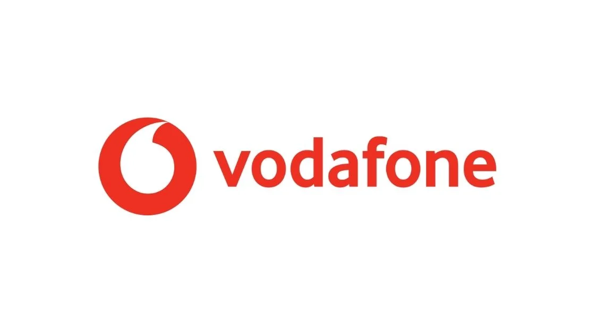

Vodafone Recruitment 2022 for Intern Pune
Vodafone Recruitment 2022 for Intern Pune | Apply Now!
Vodafone has announced a job notification for the post of intern A student from various disciplines can apply for Vodafone Recruitment 2022. Interested and eligible candidates can read more details below

| Vodafone Recruitment 2022 | |||
|---|---|---|---|
| 1 | Company name | Vodafone | |
| 2 | Post Name | Intern | |
| 3 | Salary | 30,000 - 40,000 / Month | |
| 4 | Experience | 0-2 Year | |
| 5 | Job Location | Pune | |
| 6 | Batch | 2022/21/20 | |
Job Description:
Vodafone is hiring candidates for the post of intern.
Job Responsibilities:
▪︎ Follows processes to deliver tasks which support the team with designing new approaches, methodologies and modelling comprehensive dashboards
▪︎ Communication skills to exchange ideas and information with internal teams
▪︎ Delivers assigned tasks in supporting centralising including report design, development, publishing, maintenance and special report requests;
▪︎ Delivers activities which help establish and maintain processes to analyse requirements
▪︎ Performs other job-related duties or tasks
Eligibility Criteria:
▪︎ Bachelor’s degree from any stream.
Preferred skill:
▪︎ Data Modelling
▪︎ Data Visualisation
▪︎ Data Analytics and Insights
▪︎ Data Management and Transformation
▪︎ AI – Deep and Machine Learning
▪︎ Leading Organisation Culture and Change
▪︎ Strategic Mindset
About Vodafone :
At Vodafone, we’re working hard to build a better future. A more connected, inclusive, and sustainable world. As a dynamic global community, it’s our human spirit, together with technology, that empowers us to achieve this.
How to Apply for Vodafone Recruitment 2022?
▪︎ Interested and Eligible candidates can apply for this drive online by scrolling down and clicking on Apply HERE.